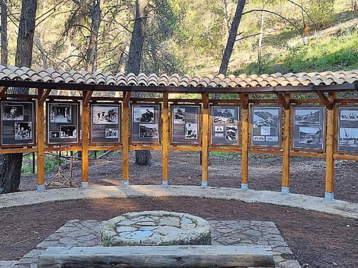

Your local tour guide
Use Sicily Explorer to get quick ideas on what to see, where to walk and what makes each place special.

San Cataldo
Every May the town celebrates its patron, San Cataldo, with processions, food and events that bring together people from nearby villages.

Gabara
Near San Cataldo you can visit the former mining area of Gabara, now a park that tells the story of Sicilian sulphur mines.

Palermo
Palermo mixes Arabic domes, Norman churches and Baroque palaces, all shaped by the many peoples who ruled the city.